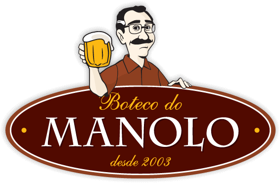

Boteco do Manolo
Rua Aspicuelta, 116 - Vila Madalena, São Paulo - SP

Horário de funcionamento: 12:00 as 00:00 (terça a domingo)
Musica ambiente
Preço: $$$
Avaliação: ★★★★★
O Boteco do Manolo segue as linhas de um tradicional boteco de esquina, porem
com um requinte a mais. Com uma decoração lusitana o boteco é referência em acomodidade
e bom atendimento ao cliente. Se procura um ambiente aconchegante e uma cerveja gelada
com um bom papo, este é o lugar certo.